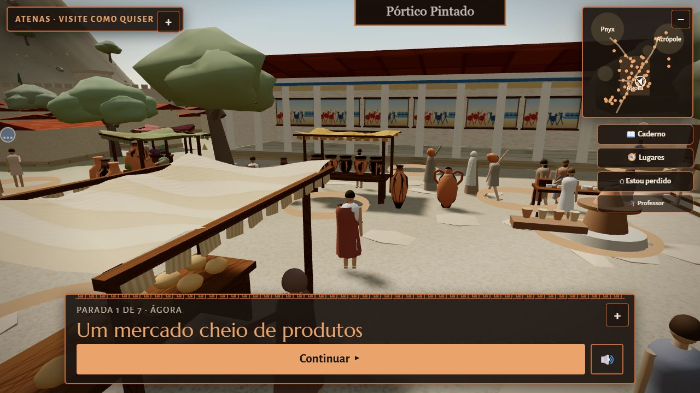
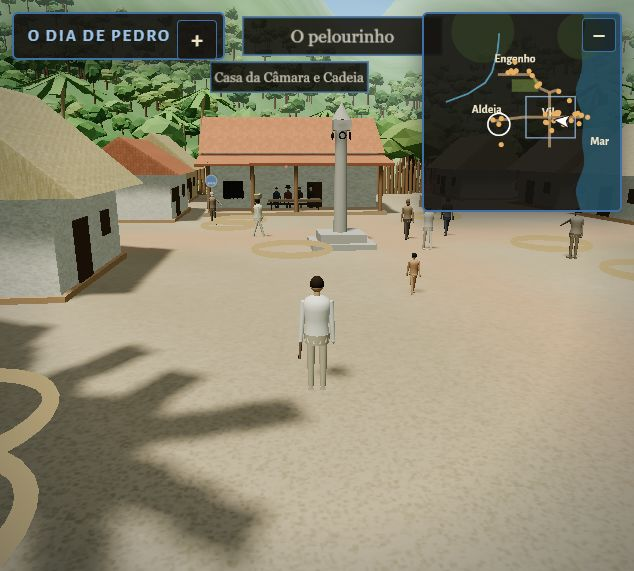
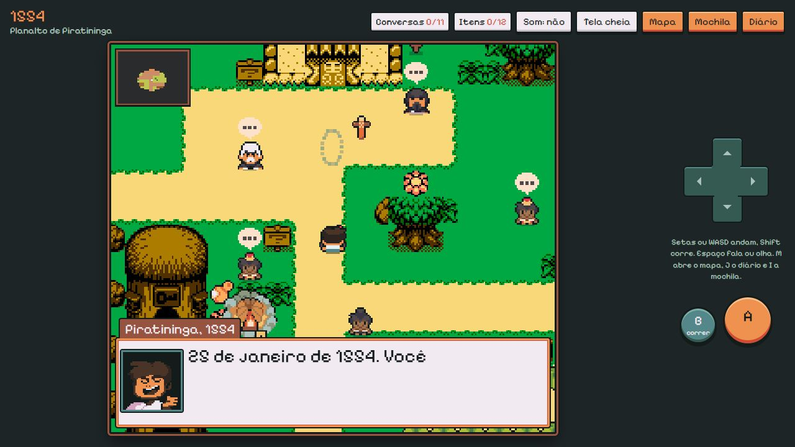

Materiais didáticos
Aulas, atividades, avaliações, fontes e recursos de História e Sociologia.
Seção em preparaçãoUm espaço de ensino de História, pesquisa, formação docente e experimentação com tecnologia. Para estudantes, professores e pessoas interessadas em aprender.
Explore o portal ↓Materiais de autoria própria, projetos pedagógicos e métodos de trabalho em desenvolvimento aberto.
Viaje pelo passado e aprenda História por meio da exploração de cidades, personagens e situações históricas.
4 jogos disponíveis ↘Aulas, atividades, avaliações, fontes e recursos de História e Sociologia.
Seção em preparaçãoEnsino explícito, ciência da aprendizagem, currículo e práticas de sala de aula.
Seção em preparaçãoHistória do Brasil, de São Paulo e outros temas de investigação histórica.
Seção em preparaçãoExperimentos de IA, ferramentas digitais e sistemas de conhecimento aplicados à educação.
Seção em preparaçãoDecisões, métodos, testes, resultados e aprendizagens durante a construção dos projetos.
Seção em preparaçãoO passado é um lugar que você pode explorar. Percorra cidades, encontre personagens e descubra suas histórias.

01 /Grécia AntigaDa ágora à assembleia: descubra a vida cotidiana e os limites da democracia ateniense.
Jogar Atenas 02 /Brasil joanino
02 /Brasil joaninoAcompanhe Tonico pelas ruas, pelo porto e pelo Paço na cidade que recebeu a corte portuguesa.
Jogar Rio de Janeiro
03 /Brasil colonialExplore a vila, converse com seus moradores e descubra o cotidiano de São Vicente no início da colonização.
Jogar São Vicente
04 /São Paulo no tempoExplore Piratininga e acompanhe as mudanças da cidade em diferentes épocas, conversando com seus moradores.
Jogar PiratiningaEste portal reúne projetos do professor José Guilherme Zago. A proposta é publicar materiais próprios e autorizados, documentar o processo de criação e permitir consulta, reutilização e aprimoramento, respeitando direitos autorais, privacidade e limites éticos. As demais áreas serão abertas à medida que os conteúdos forem selecionados e revisados.